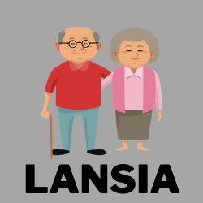

Pendaftaran Online
Petunjuk
Lihat Antrian
Telusuri
Beranda
Registrasi Online Puskesmas
Silahkan Pilih Jenis Layanan

Daftar Poli Tujuan
Pilih Layanan UMUM apabila anda mengalami sakit gejala umum
Pilih Layanan LANSIA apabila anda pasien dengan usia > 60 tahun
Pilih Layanan ANAK apabila anda pasien dengan usia 5 tahun 1 bulan - 17 tahun